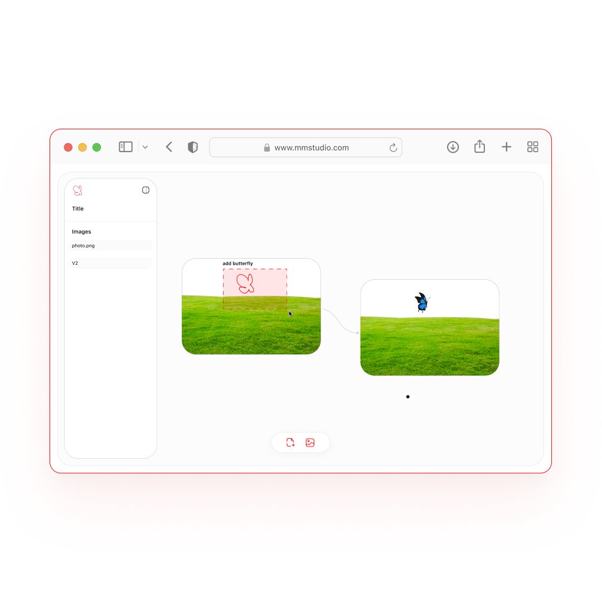
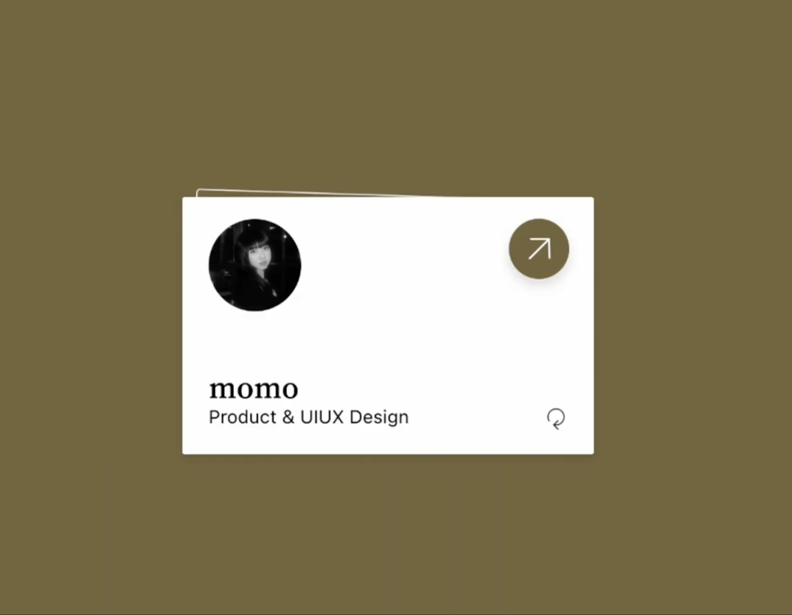
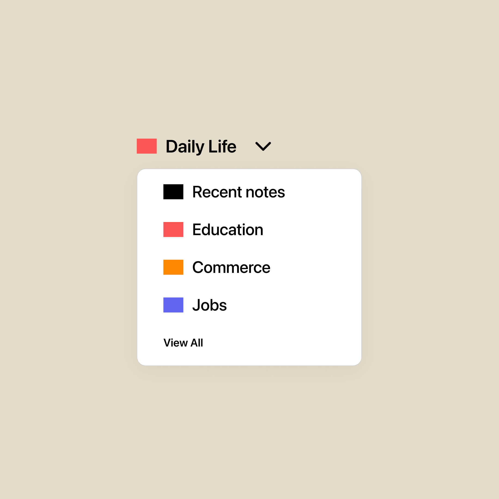
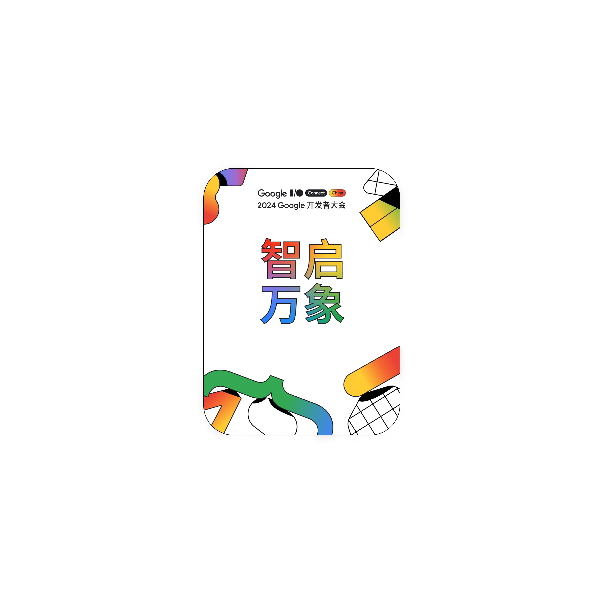
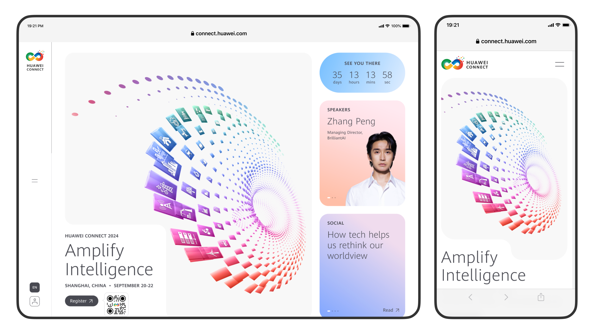
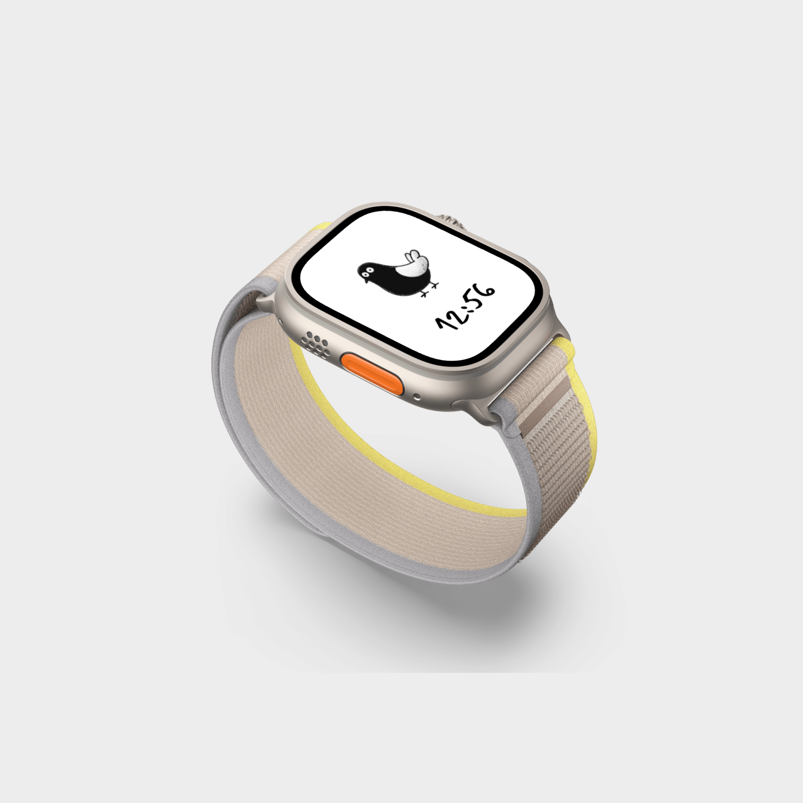
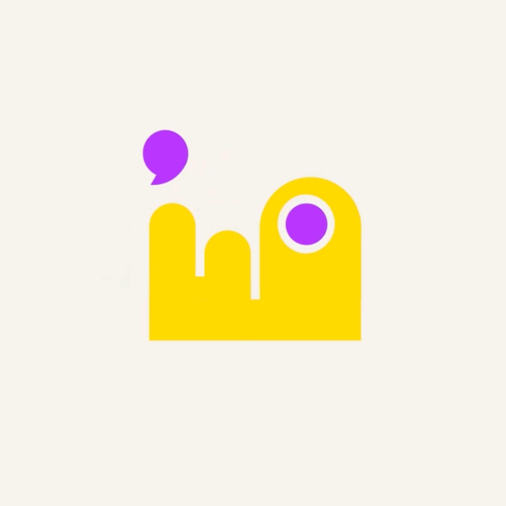
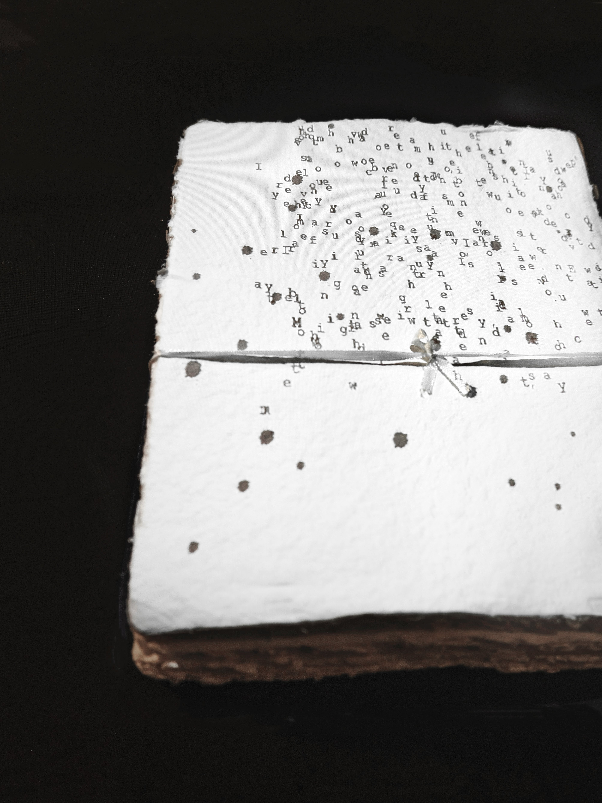

Hi, I'm Moira.
I make things feel human.
I'm an AI product designer turning complex problems into simple, human experiences.
I'm an AI product designer turning complex problems into simple, human experiences.


David Tao · blv
Song preview · full playlist on Spotify

I'm Moira, an AI product designer who cares about making complex things feel simple and human. I work across research, interaction design, and front-end development to turn ideas into experiences people can actually use.


My experience spans product design at MiniMax, creative UI/UX at Publicis Groupe, and content design at iQIYI. Across each, I've explored how thoughtful design can bring people and technology a little closer.
 Through my lens
Through my lens


At New York University, I studied Interactive Media Arts, with a minor in Web Programming and Applications, class of 2026. It's where my interests in design, technology, and creative expression came together.
I move between user research, rapid prototyping, usability testing, and motion design. I like building something early, learning from people, and refining the details along the way.


I'm a photographer, bedroom DJ, bento UI lover, and an INTJ Scorpio. As a human, I love building deep connections with people.

I like making ideas tangible — through research, thoughtful interfaces, and working prototypes.
A little curiosity. A little play. A lot of care for the details.